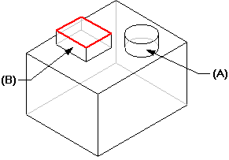

Missing parent
If you delete something that a feature depends upon (a parent of the feature), then the feature will fail. The most common example is deleting the face that a profile plane is based on.
For instance, if you construct a protrusion (A) using a face from another protrusion as the profile plane (the top face of B), then deleting feature B causes feature A to fail.

The failed feature is added to the Error Assistant dialog box. You can use the Error Assistant command to select the part for editing. Return to the Profile step and define a new profile plane.
How do I
Select a featureLearn more
Feature modelingConstructing features using the feature construction commands
Vent features